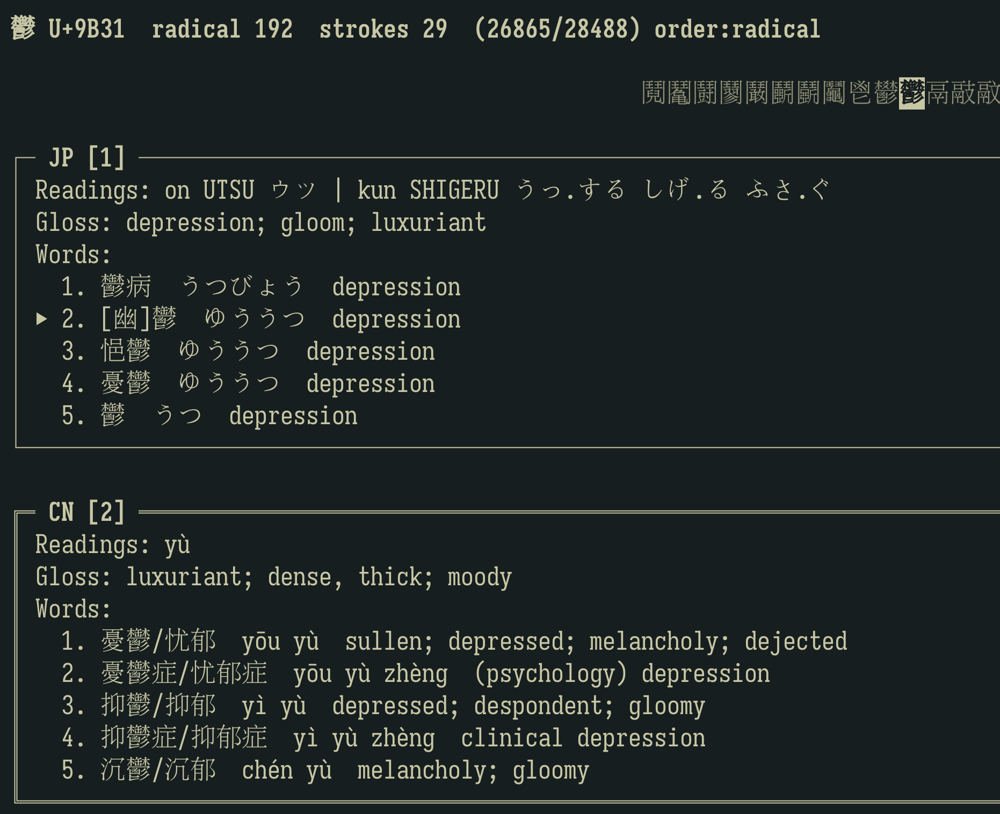

Lexical Comparison
JP/CN readings, glosses, and example words shown side-by-side with rapid glyph-to-glyph traversal.
Comparative Han Character Research Tool
Explore readings, variants, components, phonetic series, and provenance with a keyboard-first workflow designed for serious learners and kanji geeks.
JP/CN readings, glosses, and example words shown side-by-side with rapid glyph-to-glyph traversal.
Variants graph, radicals, components, and phonetic series overlays support fine-grained investigation.
Bookmarks, notes, presets, and stroke order animations for enhanced exploration.
Terminal mode for high-speed keyboard navigation and low-friction remote usage. Ideal for scholars who live in the command line.
Desktop mode with a large glyph display and overlay windows.
git clone https://github.com/pmcarlton/kanjitui.git
cd kanjitui
pip install -e .[gui]
make fetch-data
make build-db
kanjitui --db data/db.sqlite
# or
kanjigui --db data/db.sqliteFor tofu-free navigation, rebuild with the same font family/path used by your terminal or GUI runtime.
The screenshot below shows the TUI in active study mode: high-density lexical data, variant-aware navigation, and related-glyph jumping.

Full user manual (build flow, font filtering, key reference, capabilities, and use cases) is available in MkDocs format.